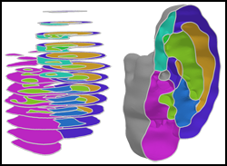
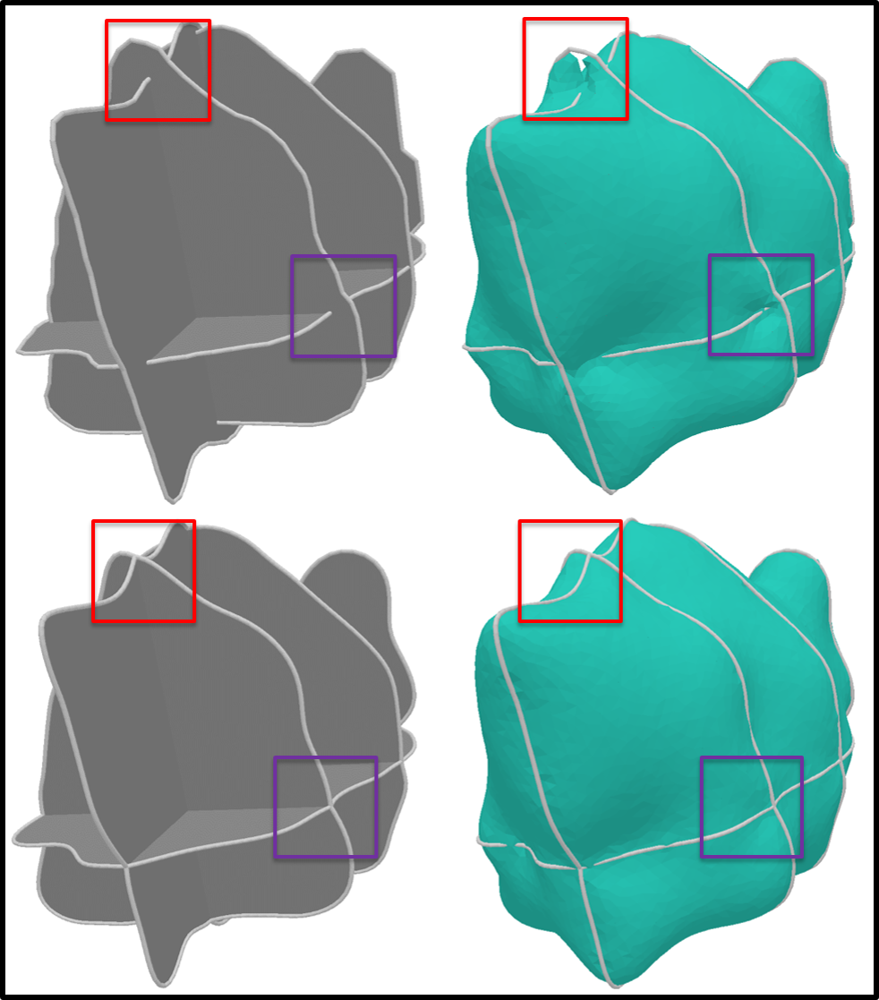
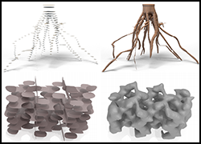
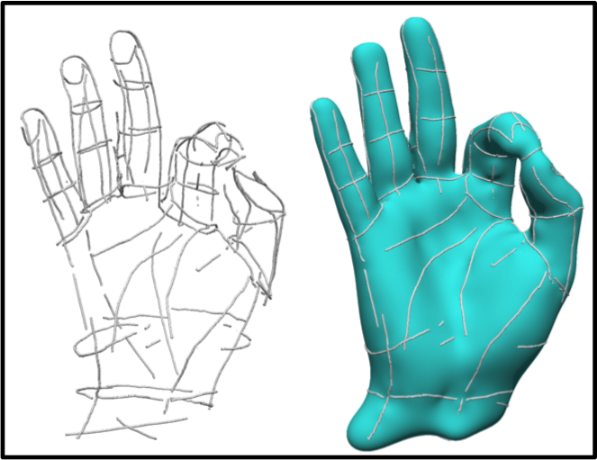

Zhiyang Huang
Ph.D. in Computer Science
Washington University in St. Louis
[CV]
Bio
Zhiyang
Huang obtained his Ph.D. degree in Computer Science in 2019 from Washington
University in St. Louis under the supervision of Prof. Tao Ju. He
received his bachelor degree in Electronic Engineering and Information
Science from University of Science and Technology of China in 2014.
Research Interests
Computational Geometry, 3D Vision, Applied Machine Learning
Publication
Extrinsically Smooth Direction Fields
Computer & Graphics (Proc. SMI 2016)
Zhiyang Huang, Tao Ju.
[project page] [PDF]
 Topology-controlled Reconstruction of Multi-labelled Domains from Cross-sections
ACM Transactions on Graphics (Proc. ACM Siggraph 2017)
Zhiyang Huang, Ming Zou, Nathan Carr, Tao Ju.
[project page] [PDF]

Repairing Inconsistent Curve Networks on Non-parallel Cross-sections
Computer Graphics Forum (Proc. Eurographics 2018)
Zhiyang Huang, Michelle Holloway, Nathan Carr, Tao Ju.
[project page]

Robust Optimization for Topological Surface Reconstruction
ACM Transactions on Graphics (Proc. ACM Siggraph 2018)
Roee Lazar, Nadav Dym, Yam Kushinksy, Zhiyang Huang, Tao Ju, Yaron Lipman.
[PDF][Code]

Variational Implicit Point Set Surface
To be appeared at ACM Siggraph 2019
Zhiyang Huang, Nathan Carr, Tao Ju.
[project page]
Contact
Email: zhiyang.huang AT wustl DOT edu
Address: Jolley Hall 426C, 1 Brookings Driving, St. Louis, MO, 63130